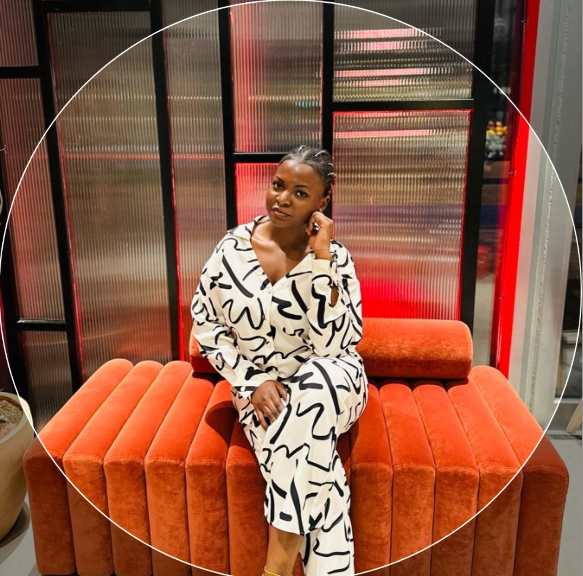

A medical professional turned to multiple things; A formulator, into transport and fell in love with technology. Currently attending the 4th cohort at WitU studying Web development which is due in 3 months and I am hoping to achieve the best of knowledge thats applicable in society and help different businesses in Uganda